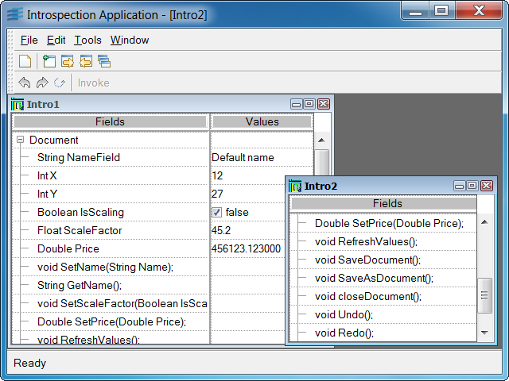

introspcProgram showing the introspection mechanism of the Application Framework library.

This program shows you how to use the introspection mechanism of
the Application Framework library. This
mechanism allows you to list all the
fields and methods exported by an IlvDvInterface
object, get and change the value of its fields, and invoke
its methods.
The sample lets you create documents whose sheet views
display and edit the exported fields and methods of
the document. It is possible to change the value of the
document fields by editing the corresponding row within
the sheet view. To invoke a method, select the corresponding
row in the sheet view and activate the Execute Method button.
A dialog box appears allowing you to edit the parameters
passed to the method, invoke the method, and get the value
returned by the method.
IlvDvInterfaceIlvDvHierarchicalSheetView